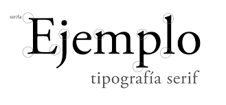
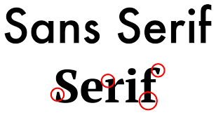

1 - Elementos básicos de una interfaz
1-1 - El color
Modelo RGB
El modelo RGB es un modelo de síntesis adictiva el que se añade el color rojo, verde y azul de
varias formas
para reproducir una amplia gama de colores. El principal objetivo que tiene el modelo RGB es la
detección,
la representación y visualización de imágenes en sistemas electrónicos como por ejemplo:un teléfono
móvil,
una televisión

Modelo HSL
Es un modelo de color de los llamados cilíndricos debido al modo de representar gráficamente las
coordenadas de sus colores
al contrario del modelo cubico RGB, las siglas HSL significan tono (representa los colores rojo,
verde y azul), saturación
(distancia al eje del color blanco negro) y luz (grado de claridad o brillo).
Modelo HSV
El modelo HSV un color se define por su tono, por su saturación y por su luminosidad, por lo que se
parece más a la percepción del color humano.
Una de las ventajas que podemos observar en este modelo es que se puede ajustar fácilmente la
saturación y el brillo de un color, debido a esta
ventaja este modelo es uno de los más comunes en los programas gráficos.
1-2 - La tipografia
Tipografía Serif
Es un tipo de tipografía que utiliza una serie de remates, es decir añadir una serie de detalles en los bordes de las letras. Este tipo de tipografía suele ser percibida como un tipo de tipografía seria, respetable e institucional debido a los bordes que presenta este tipo de letras.
Tipografía Sans Serif
Es un tipo de tipografía es conocida por el nombre de paloseco, ese nombre es debido a que los caracteres no presentan ningún tipo de remate. Este tipo de letra normalmente es usado para los titulares pero no a los cuerpos, ni grandes bloques de texto.
Unidades de medida
- Unidades relativas
Las unidades relativas dependen de otras medidas, un ejemplo de ello es que puede depender del ancho disponible en una pantalla del ordenador lo que hacen que las páginas web sean más adecuadas para el diseño.Algunos ejemplos de medida relativa son el porcentaje, la em, el remete…,
- Unidades Absolutas
Las medidas absolutas son aquellas que se refieren a una medida inalterable como por ejemplo los centímetros y las pulgadas.Algunos ejemplos de medida absoluta son el milímetro, el centímetro, el punto, etc...
1-3 - Los iconos
Los iconos son una especie de pictogramas que se utilizan para representar archivos, carpetas, programas y unidades de almacenamiento, se utiliza para embellecer las páginas.